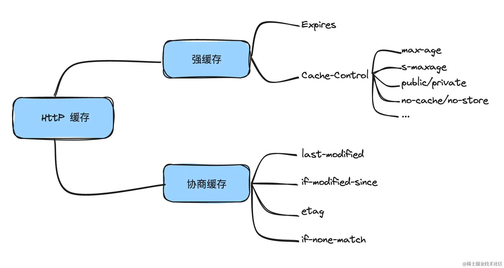
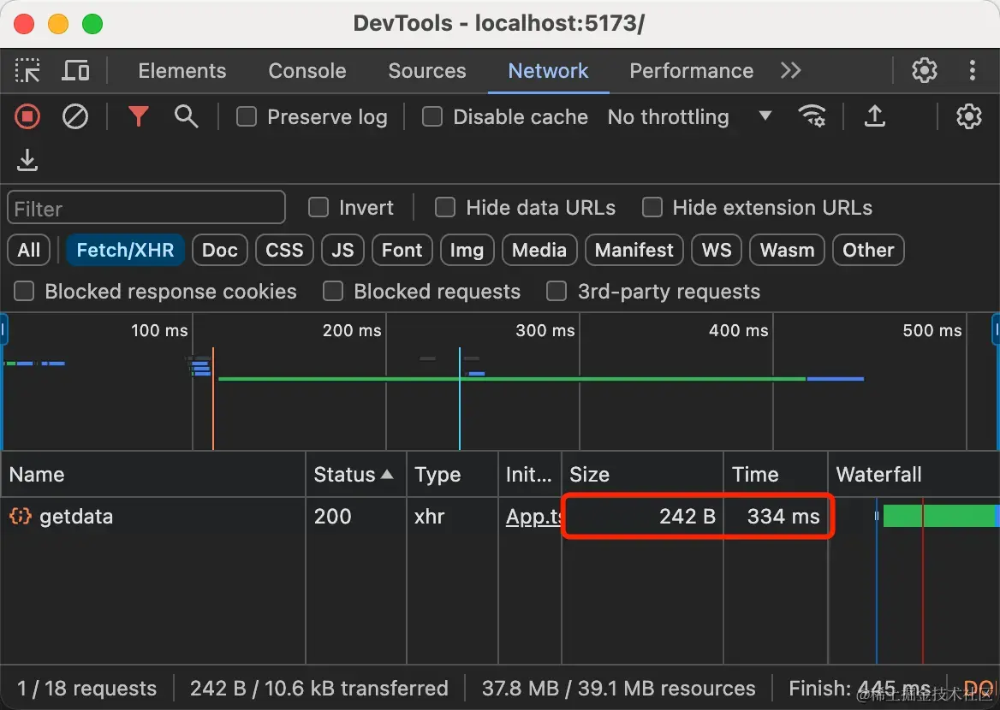
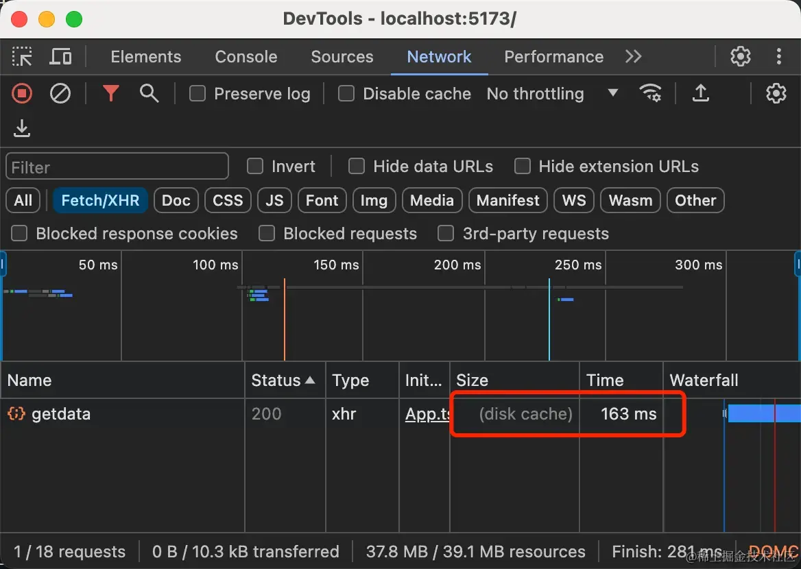
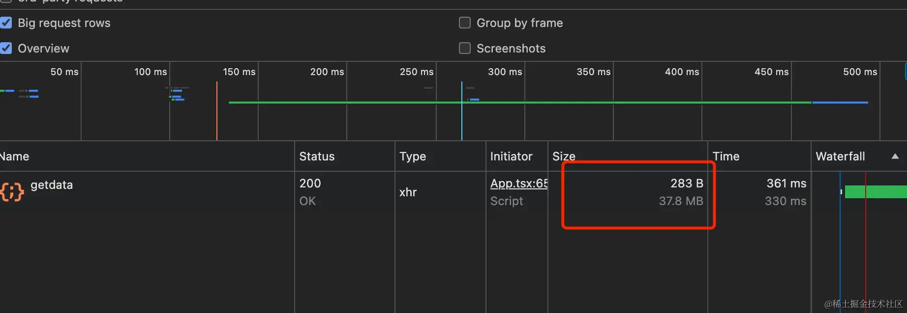

前端缓存是所有前端程序员在成长历程中必须要面临的问题，它会让我们的项目得到非常大的优化提升，同样也会带来一些其它方面的困扰。大部分前端程序员也了解一些缓存相关的知识，比如：强缓存、协商缓存、cookie等，但是我相信大部分的前端程序员不了解它们的缓存机制。接下来我将带你们深入理解缓存的机制以及缓存时间的判断公式，如何合理的使用缓存机制来更好的提升优化。我将会把前端缓存分成 HTTP 缓存和浏览器缓存两个部分来和大家一起聊聊。
HTTP 是一种超文本传输协议，它通常运行在 TCP 之上，从浏览器 Network 中可以看到，它分为Respnse Headers（响应头）、Request Headers（请求头）两部分组成。
接下来介绍一下与缓存相关的头部字段：
我们先来看一下MDN对于 expires 的介绍
响应标头包含响应应被视为过期的日期/时间。
备注： 如果响应中有指令为 max-age 或 s-maxage 的 Cache-Control 标头，则 Expires 标头会被忽略。
Expires: Wed, 24 Apr 2024 14:27:26 GMT
Cache-Control是HTTP/1.1中定义的缓存字段，它可以由多种组合使用,分开列如：max-age、s-maxage、public/private、no-cache/no-store 等
Cache-Control: max-age=3600, s-maxage=3600, public
max-age是相对当前时间，单位是秒，当设置max-age时则expires就会失效，max-age 的优先级更高。
而 s-maxage 与 max-age 不同之处在于，其只适用于公共缓存服务器，比如资源从源服务器发出后又被中间的代理服务器接收并缓存。
public是指该资源可以被任何节点缓存，而private只能提供给客户端缓存。当设置了 private 之后，s-maxage 则会无效。
使用no-store表示不进行资源缓存。使用no-cache表示告知（代理）服务器不直接使用缓存，要求向源服务器发起请求，而当在响应首部中被返回时，表示客户端可以缓存资源，但每次使用缓存资源前都必须先向服务器确认其有效性，这对每次访问都需要确认身份的应用来说很有用。
当然，我们也可以在代码里加入 meta 标签的方式来修改资源的请求首部：
<meta http-equiv="Cache-Control" content="no-cache" />
这里我起了一个nestjs的服务，该getdata接口缓存10s的时间，Ï 代码如下：
@Get('/getdata')
getData(@Response() res: Res) {
return res.set({ 'Expires': new Date(Date.now() + 10).toUTCString() }).json({
list: new Array(1000000).fill(1).map((item, index) => ({ index, item: 'index' + index }))
});Ï
}
第一次请求，花费了 334ms 的时间。
第二次请求花费了 163ms 的时间，走的是磁盘缓存，快了近 50%的速度
接下来我们来验证使用Cache-Control是否可以覆盖Exprie，我们将getdata接口修改如下,Cache-Control设置了1s。我们刷新页面可以看到getdata接口并没有缓存，每次都会想服务器发送请求。
@Get('/getdata')
getData(@Response() res: Res) {
return res.set({ 'Expires': new Date(Date.now() + 10).toUTCString(), 'Cache-Control': 1 }).json({
list: new Array(1000000).fill(1).map((item, index) => ({ index, item: 'index' + index }))
});
}
仔细的同学应该会发现一个问题，清除缓存后的第一次请求和第二次请求Size的大小不一样，这是为什么呢？
打开f12右键刷新按钮，点击清空缓存并硬性重新加载。
我们开启Big request rows更方便查看Size的大小，开启时 Size 显示两行，第一行就是请求内容的大小，第二行则是实际的大小。
刷新一下，可以看到 Size 变成了 283B 大小了。
带着这个问题我们来深入研究一下浏览器的压缩。HTTP2 和 HTTP3 的压缩算法是大致相同，我们就拿 HTTP2 的压缩算法（HPACK）来了解一下。
[https://juejin.cn/post/7382891974942179354?searchId=202410071126407A9D8B3EFD3342BA781A]